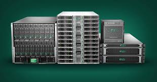

Reutilització Intel·ligent de Servidors
Eco-Server Cloud és una plataforma de virtualització basada en servidors d'alt rendiment que han estat recondicionats[cite: 14]. Donem una segona vida al maquinari de centres de dades, reduint així els residus electrònics i optimitzant l'ús de recursos energètics[cite: 12].

Aquesta solució és ideal per a PIMES i institucions que busquen infraestructures TIC robustes i responsables amb el medi ambient[cite: 24].
Impacte Positiu i Sostenible
Reducció de Residus RAEE
Allarguem la vida útil dels equips (de 4 a 8 anys), disminuint dràsticament la quantitat de residus electrònics generats[cite: 23].
Eficiència Energètica
Utilitzem programari de virtualització d'última generació que optimitza l'ús del maquinari, reduint el consum elèctric global del sistema[cite: 14, 22].
Economia Circular Aplicada
Substituïm el model de "comprar-usar-llençar" per un model de recondicionament, reutilització i manteniment eficient[cite: 7, 20].
Tecnologia per a un Futur Verd
La nostra arquitectura combina el millor del maquinari recondicionat amb solucions de programari de codi obert per garantir durabilitat i escalabilitat.

Implementem un Hipervisor (com Proxmox) sobre servidors físics recondicionats per gestionar múltiples Màquines Virtuals i Contenidors de manera eficient, oferint serveis de núvol privat o web a baix cost.
Avaluació i Revisió Contínua
Per assegurar l'èxit del producte i la millora contínua, mesurem els següents indicadors clau (KPIs):
- Quilos de RAEE estalviats: Pes total de maquinari que s'ha mantingut operatiu en lloc de ser rebutjat.
- Consum energètic per servei: KWh consumits per unitat d'ús de servidor físic.
- Vida útil del maquinari: Mitjana d'anys que els equips recondicionats funcionen amb èxit.
- Enquestes de satisfacció del client: Sobre el rendiment i la claredat del benefici ambiental.